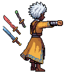

RILEY · STILL SPRITE · PREVIEW ONLY
Fist Blade · One fist, four floating swords
One empty closed fist extended forward, with all four swords floating behind Riley. The in-game Fist Blade stance guides the pose; approved candidate 3 guides her appearance. No animation or live-game replacement.
Corrected still for approval: four separate red, green, blue and gold swords hover behind her. The other arm is tucked back and its hand is hidden. No sword is held or attached to her fist.
Approved candidate 3

In-game pose reference

Corrected Fist Blade still

128 × 128 · One still sprite · 6 generations charged (estimate 5–7), plus chat usage.